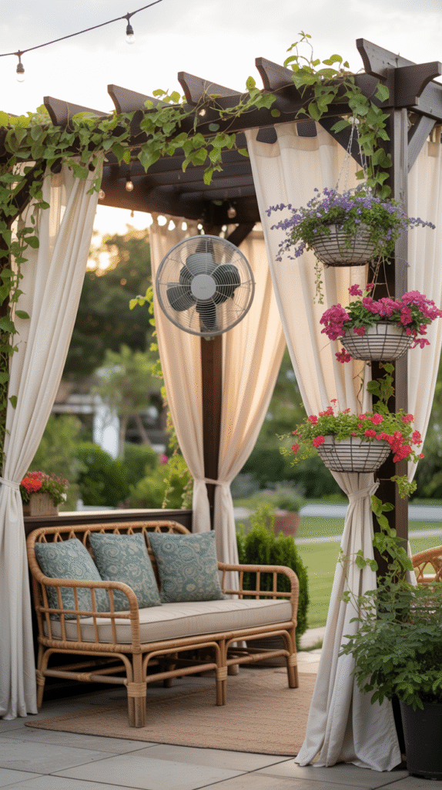
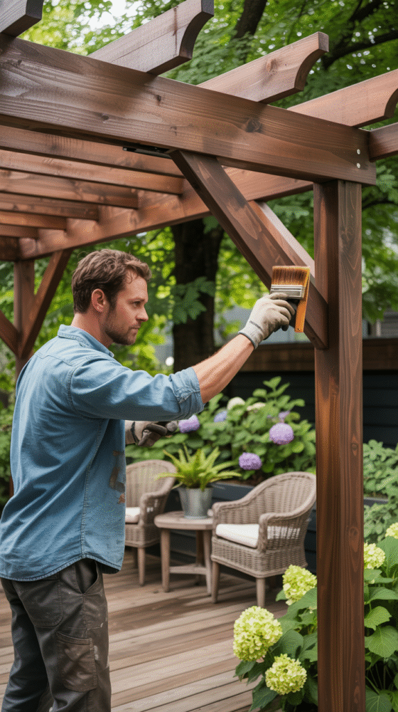
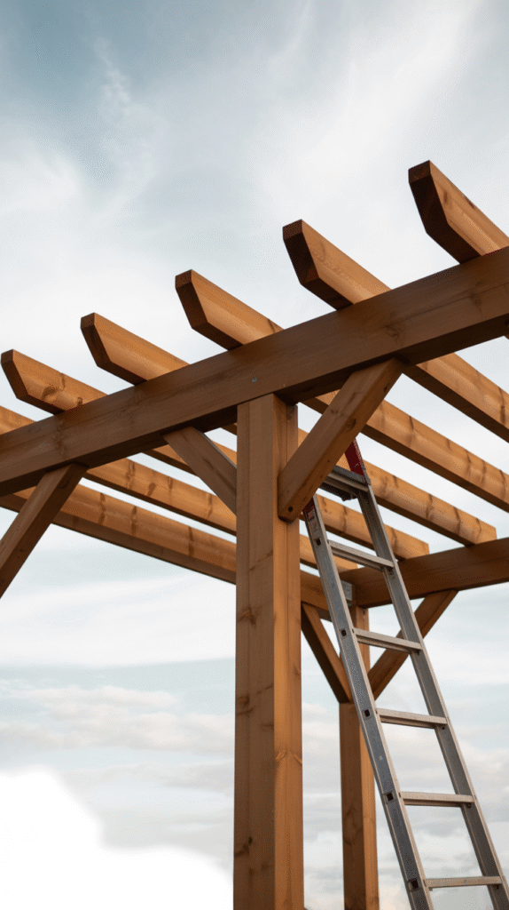
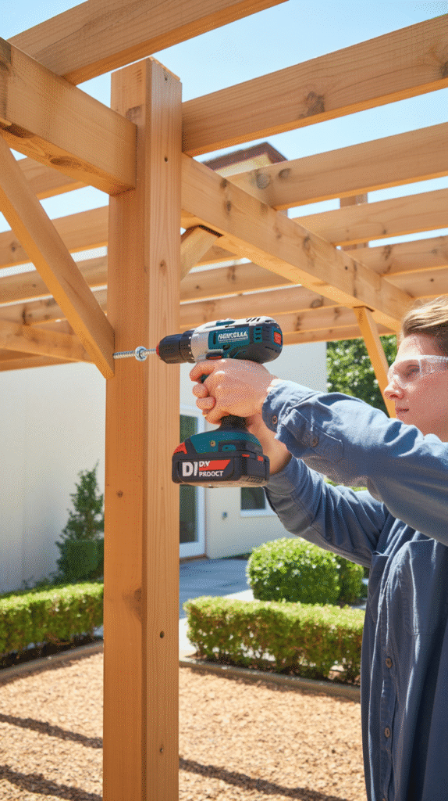
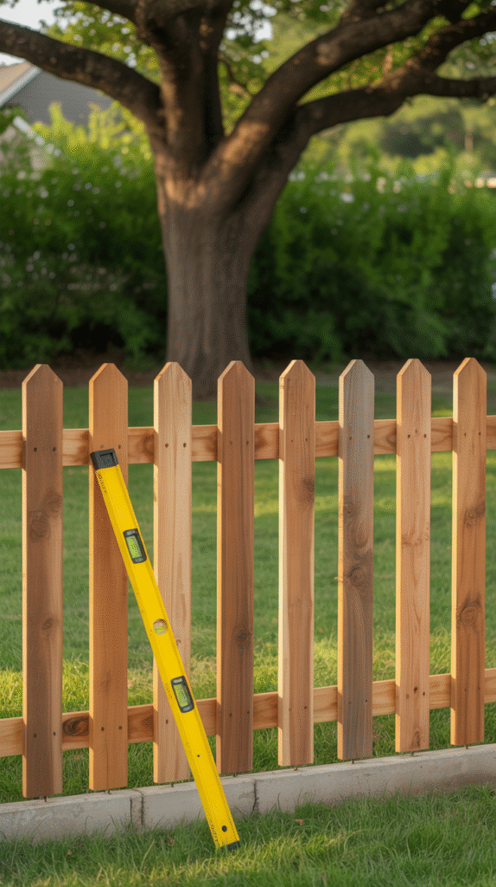
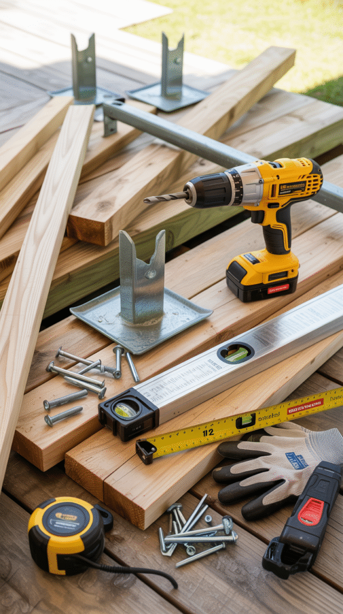
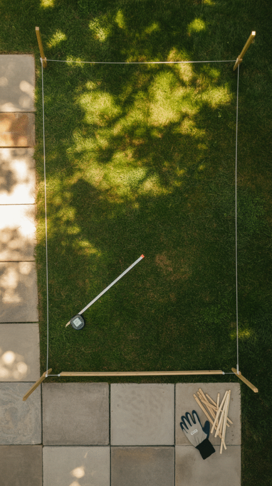
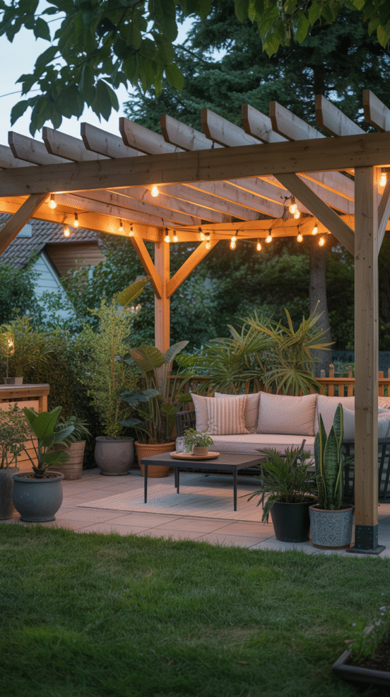

Building a pergola sounds like a far bigger project than it actually is.
The structure comes down to six real steps, most of them just posts, beams, and rafters assembled in the right order.
This walks through the actual build process, not just the finished look.

What About a Kit?
A pre-cut pergola kit skips the material sourcing and cutting, leaving mostly assembly, a reasonable option for a first-time builder wanting a more guided process.
A fully custom build offers more control over size, spacing, and material, at the cost of more upfront planning and a steeper first-timer learning curve.
Mistakes Worth Avoiding
Rushing the leveling and squaring on the first two posts compounds into a visibly crooked structure by the time the rafters go on.
Under-sizing the posts or footings for the pergola's actual size and local wind conditions is a common mistake, and the hardest to fix after the concrete sets.
Skipping the local building code check is the most consequential mistake of all, since it can mean redoing part or all of the structure later.
Add-Ons Worth Considering
String lights, a retractable canopy, or climbing plants trained up the posts all extend the pergola's function well past the basic structure.
These are worth planning for during the build, even if they get added later, since some require hardware mounted before the structure is finished.

Secure and Finish the Structure
A final check of every connection, followed by a protective stain or sealant, finishes the structural build and protects the wood from the elements going forward.
This step is easy to rush after the more visually satisfying earlier steps, but it's what determines how well the structure holds up over years of weather exposure.

Install the Rafters
Evenly spaced rafters across the beams create the pergola's signature overhead pattern and begin to define the amount of shade the finished structure will provide.
Spacing them closer together increases shade; spacing them further apart lets in more light, both are valid depending on the intended use.

Attach the Support Beams
Beams connecting the tops of the posts create the structural frame the rafters will eventually rest on.
Proper bracing and secure fasteners here matter more than they might seem to, since these beams carry the weight of everything built on top.

Install the Posts
Posts set in concrete footings, dug below the local frost line, give the whole structure its foundation and long-term stability.
Getting every post perfectly level and square at this stage matters more than at any later step, since errors here compound through the rest of the build.

Gather Tools and Materials
Pressure-treated lumber or cedar, post anchors, concrete for the footings, and standard carpentry tools cover most of what a basic pergola build requires.
Having everything on hand before starting avoids the single most common build delay, a mid-project hardware store run.

Pick the Right Spot
A level area with good drainage, positioned to catch the right amount of sun and shade for how it'll actually get used, matters more than exact placement within the yard.
Checking local building codes and any property line setback requirements before digging a single post hole saves real headaches and expense later.

Why Build One in the First Place
A pergola defines an outdoor space the way a room's walls and ceiling define an indoor one, without fully enclosing it.
It also adds real, lasting property value and usable square footage to a yard that might otherwise be just open lawn.

You've Got This
None of these six steps individually require advanced carpentry skill, the project is approachable in large part because each step is straightforward on its own.
Take the spot selection and post installation seriously, since those two steps are what everything else depends on.
A well-built pergola, done carefully and without rushing any single stage, lasts for decades and genuinely transforms how a backyard gets used.